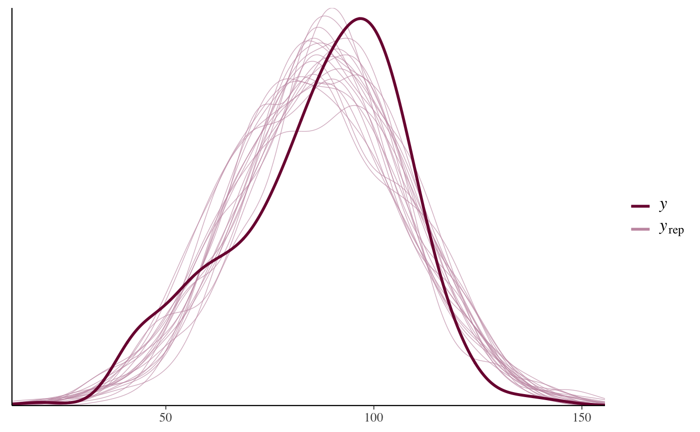

Small datasets for use in rstanarm examples and vignettes.
Format
bball1970Data on hits and at-bats from the 1970 Major League Baseball season for 18 players.
Source: Efron and Morris (1975).
18 obs. of 5 variables
PlayerPlayer's last nameHitsNumber of hits in the first 45 at-bats of the seasonABNumber of at-bats (45 for all players)RemainingABNumber of remaining at-bats (different for most players)RemainingHitsNumber of remaining hits
bball2006Hits and at-bats for the entire 2006 American League season of Major League Baseball.
Source: Carpenter (2009)
302 obs. of 2 variables
yNumber of hitsKNumber of at-bats
kidiqData from a survey of adult American women and their children (a subsample from the National Longitudinal Survey of Youth).
Source: Gelman and Hill (2007)
434 obs. of 4 variables
kid_scoreChild's IQ scoremom_hsIndicator for whether the mother has a high school degreemom_iqMother's IQ scoremom_ageMother's age
mortalitySurgical mortality rates in 12 hospitals performing cardiac surgery in babies.
Source: Spiegelhalter et al. (1996).
12 obs. of 2 variables
yNumber of deathsKNumber of surgeries
pbcLong,pbcSurvLongitudinal biomarker and time-to-event survival data for 40 patients with primary biliary cirrhosis who participated in a randomised placebo controlled trial of D-penicillamine conducted at the Mayo Clinic between 1974 and 1984.
Source: Therneau and Grambsch (2000)
304 obs. of 8 variables (
pbcLong) and 40 obs. of 7 variables (pbcSurv)agein yearsalbuminserum albumin (g/dl)logBililogarithm of serum bilirubindeathindicator of death at endpointfutimeYearstime (in years) between baseline and the earliest of death, transplantion or censoringidnumeric ID unique to each individualplateletplatelet countsexgender (m = male, f = female)statusstatus at endpoint (0 = censored, 1 = transplant, 2 = dead)trtbinary treatment code (0 = placebo, 1 = D-penicillamine)yeartime (in years) of the longitudinal measurements, taken as time since baseline)
radonData on radon levels in houses in the state of Minnesota.
Source: Gelman and Hill (2007)
919 obs. of 4 variables
log_radonRadon measurement from the house (log scale)log_uraniumUranium level in the county (log scale)floorIndicator for radon measurement made on the first floor of the house (0 = basement, 1 = first floor)countyCounty name (factor)
roachesData on the efficacy of a pest management system at reducing the number of roaches in urban apartments.
Source: Gelman and Hill (2007)
262 obs. of 6 variables
yNumber of roaches caughtroach1Pretreatment number of roachestreatmentTreatment indicatorseniorIndicator for only elderly residents in buildingexposure2Number of days for which the roach traps were used
tumorsTarone (1982) provides a data set of tumor incidence in historical control groups of rats; specifically endometrial stromal polyps in female lab rats of type F344.
Source: Gelman and Hill (2007)
71 obs. of 2 variables
yNumber of rats with tumorsKNumber of rats
wellsA survey of 3200 residents in a small area of Bangladesh suffering from arsenic contamination of groundwater. Respondents with elevated arsenic levels in their wells had been encouraged to switch their water source to a safe public or private well in the nearby area and the survey was conducted several years later to learn which of the affected residents had switched wells.
Souce: Gelman and Hill (2007)
3020 obs. of 5 variables
switchIndicator for well-switchingarsenicArsenic level in respondent's welldistDistance (meters) from the respondent's house to the nearest well with safe drinking water.assocIndicator for member(s) of household participate in community organizationseducYears of education (head of household)
References
Carpenter, B. (2009) Bayesian estimators for the beta-binomial model of batting ability. https://web.archive.org/web/20220618114439/https://lingpipe-blog.com/2009/09/23/
Efron, B. and Morris, C. (1975) Data analysis using Stein's estimator and its generalizations. Journal of the American Statistical Association 70(350), 311–319.
Gelman, A. and Hill, J. (2007). Data Analysis Using Regression and Multilevel/Hierarchical Models. Cambridge University Press, Cambridge, UK. https://sites.stat.columbia.edu/gelman/arm/
Spiegelhalter, D., Thomas, A., Best, N., & Gilks, W. (1996) BUGS 0.5 Examples. MRC Biostatistics Unit, Institute of Public health, Cambridge, UK.
Tarone, R. E. (1982) The use of historical control information in testing for a trend in proportions. Biometrics 38(1):215–220.
Therneau, T. and Grambsch, P. (2000) Modeling Survival Data: Extending the Cox Model. Springer-Verlag, New York, US.
Examples
if (.Platform$OS.type != "windows" || .Platform$r_arch != "i386") {
# Using 'kidiq' dataset
fit <- stan_lm(kid_score ~ mom_hs * mom_iq, data = kidiq,
prior = R2(location = 0.30, what = "mean"),
# the next line is only to make the example go fast enough
chains = 1, iter = 500, seed = 12345)
pp_check(fit, nreps = 20)
# \donttest{
bayesplot::color_scheme_set("brightblue")
pp_check(fit, plotfun = "stat_grouped", stat = "median",
group = factor(kidiq$mom_hs, labels = c("No HS", "HS")))
# }
}
#>
#> SAMPLING FOR MODEL 'lm' NOW (CHAIN 1).
#> Chain 1:
#> Chain 1: Gradient evaluation took 2.3e-05 seconds
#> Chain 1: 1000 transitions using 10 leapfrog steps per transition would take 0.23 seconds.
#> Chain 1: Adjust your expectations accordingly!
#> Chain 1:
#> Chain 1:
#> Chain 1: Iteration: 1 / 500 [ 0%] (Warmup)
#> Chain 1: Iteration: 50 / 500 [ 10%] (Warmup)
#> Chain 1: Iteration: 100 / 500 [ 20%] (Warmup)
#> Chain 1: Iteration: 150 / 500 [ 30%] (Warmup)
#> Chain 1: Iteration: 200 / 500 [ 40%] (Warmup)
#> Chain 1: Iteration: 250 / 500 [ 50%] (Warmup)
#> Chain 1: Iteration: 251 / 500 [ 50%] (Sampling)
#> Chain 1: Iteration: 300 / 500 [ 60%] (Sampling)
#> Chain 1: Iteration: 350 / 500 [ 70%] (Sampling)
#> Chain 1: Iteration: 400 / 500 [ 80%] (Sampling)
#> Chain 1: Iteration: 450 / 500 [ 90%] (Sampling)
#> Chain 1: Iteration: 500 / 500 [100%] (Sampling)
#> Chain 1:
#> Chain 1: Elapsed Time: 0.761 seconds (Warm-up)
#> Chain 1: 0.251 seconds (Sampling)
#> Chain 1: 1.012 seconds (Total)
#> Chain 1:
#> Warning: Bulk Effective Samples Size (ESS) is too low, indicating posterior means and medians may be unreliable.
#> Running the chains for more iterations may help. See
#> https://mc-stan.org/misc/warnings.html#bulk-ess
#> Warning: Tail Effective Samples Size (ESS) is too low, indicating posterior variances and tail quantiles may be unreliable.
#> Running the chains for more iterations may help. See
#> https://mc-stan.org/misc/warnings.html#tail-ess
#> `stat_bin()` using `bins = 30`. Pick better value `binwidth`.
